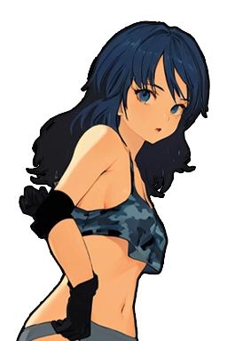

全国統一王座 P3 演出モックアップ v0.2
2026-08-13改訂: 戴冠3案+色3候補の見た目比較(裁定④Office/⑤仮運用は確定済み) ・ セリフは草案(レビュー中)から仮置き
色候補:
DAY OF THE SUMMIT ・ 第3回 天頂戦
全国統一王座 授与式UNIFIED CHAMPIONSHIP CORONATION

ここまで来ました。この重さ、受け取ります。(草案UT-COR-std-1)

阿武隈 鉄子
グランエール
初代 全国統一王者
防衛戦はおよそ3か月ごと ・ 次の天頂戦まで4年間
案Aの考え方: 天頂戦の深紅をそのまま引き継ぎ、「大会の続きの儀式」として見せる。ベルト帯と見出しだけがアイデンティティカラーで光る。3案のうち最も既存の色言語に忠実。
UNIFIED CHAMPION
頂 点
業界の頂点は、ただ一人
一番上は、ここ。それだけ。(草案UT-COR-cool-1)
阿武隈 鉄子
グランエール ・ 第3回 天頂戦覇者
初代 全国統一王者
案Bの考え方: 会場が暗転し、頂点の一人だけにスポットライトが落ちる。「頂点はただ一人」を画にした案。光の柱と粒子はアイデンティティカラー。3案で最も静かで、最も孤高。
戴 冠UNIFIED CHAMPIONSHIP CEREMONY
日々の積み上げが、こうして形になったのね。(草案UT-COR-ojo-1)
阿武隈 鉄子
グランエール ・ 第3回 天頂戦覇者
初代 全国統一王者
案Cの考え方: 年末表彰式の黄金の様式を継承した「祭りの豪華さ」。紙吹雪+金枠フレーム。ベルト帯だけアイデンティティカラー。3案で最も賑やかで祝祭感が強い。
UNIFIED TITLE ・ QUARTERLY CHALLENGE
挑 戦 表 明
申し込みに参りました。お受けいただけますね。(草案UT-ARR-ojo-1)

楠 乃亜
北斗女子プロレス
迎え撃つのは王者 阿武隈鉄子。次の興行のメインイベントに固定されます。
統一王座の挑戦は断れません(規定)。
v0.1からの派手化: タイトルを30px+二重グロー化、ベルト色の帯線、挑戦者にリムライト(色付き発光)、背景に大会エンブレムの透かし、枠自体も色付き内側グロー。色候補を切り替えると光の色が変わります。
ロースター行(クリーム地・Office)での識別
富岡加奈子👑🌐 統一王者28歳 ・ Grappler
選手詳細・黒地(Stage)での識別
富岡加奈子 👑 王者(3防衛)
🌐 全国統一王者 ・ 防衛4
興行準備のカード枠タグ
🌐 全国統一王座戦(固定)メインイベント ・ 集客+25%
ベルト帯(セレモニー共通部品)
第2代 全国統一王者
見るポイント: 上の3色ボタンで切り替えて、👑(金)との并置で潰れないか・クリーム地/黒地の両方で読めるかを確認してください。実装時は選んだ色を --unified 系トークンとして新設し、現在の仮ティールを全置換します。
WEEK 47 ・ 天頂戦前夜
返 還 式
持てるところまで持ちました。ここで返します。(草案UT-RET-std-1)
生駒 えれな グランエール
在位 4年 ・ 防衛 11度
この4年間、ベルトは一度も持ち主を変えなかった
ベルトは大会へ返還され、翌週の天頂戦で新王者が決まる
実装ノート: W47のイベントキューに1枚(_enqueuePopup作法)。自団体王者のときだけ表示、AI王者の返還は新聞のみ。枠線・見出しがアイデンティティカラーに追従。
✅ 確定済み(2026-08-13 Keisuke裁定)
①戴冠はセレモニー級全画面にする(デザインはA/B/Cから選ぶ) ／ ④こちらの番=Office書式 ／ ⑤ベルト画像は仮運用で実装先行(Keisuke制作後に同名上書き)
裁定待ち1: 戴冠セレモニーのデザイン
案A=深紅の授与式(大会の続き・色言語に忠実) ／ 案B=暗転スポットライト(孤高・「頂点はただ一人」) ／ 案C=黄金セレモニー(祝祭・表彰式の様式)。私の推奨: 案B(4年に一度だけ許される「静寂の全画面」は他のどの演出とも被らず、稀少性が最も立つ)
裁定待ち2: アイデンティティカラー(3候補・上のボタンで切替)
1=白金(頂点の別格感・金の一段上) ／ 2=紫紺(ロイヤル・王権の色) ／ 3=オーロラ(虹彩・「世界に一本」の唯一物感)。私の推奨: 3のオーロラ(既存の金/深紅/赤/橙のどれとも被らず、ベルトの唯一性が色だけで伝わる)
裁定待ち3: 到着画面の派手さ
v0.1(単色白金・地味)→v0.2(二重グロー+帯線+リムライト+透かし)。これで足りるか、まだ地味かをご判断ください